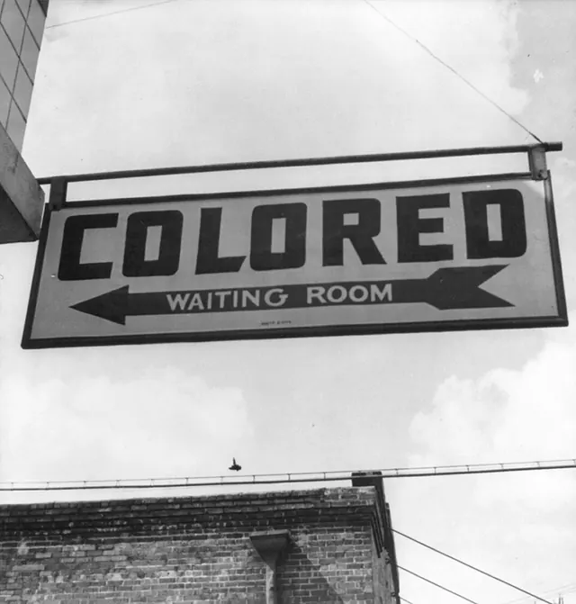

Cidadania, módulo 1, sessão 03
Quem tem lugar?
Versão para imprimir: o material, os 14 exercícios e o papel do fim. Fazes tudo sozinho, só com uma caneta.
Parte 1, ver antes de concluir
Abre: Quem tem lugar?
Caso inventado.
A turma prepara a mostra do período: cada aluno apresenta o seu trabalho e, no fim, há um debate. A sala marcada é a do primeiro andar, a de melhor luz, e não há elevador. O Rui, de 16 anos, usa cadeira de rodas. A organização propõe enviar-lhe o vídeo da mostra no próprio dia.
Uma regra igual para todos pode deixar alguém de fora?
Decide
A mostra deve mudar para o rés do chão, mesmo que a sala seja pior?
☐ Sim ☐ Não ☐ Depende
Escreve, numa linha, a razão que pesa mais para ti.
Exercício 1: Se pudesses ser qualquer um
No conto The Egg, de Andy Weir, um homem morre e fica a saber que vai viver a vida de cada pessoa. Se pudesses ser qualquer colega, aceitavas a mostra no primeiro andar?
- Não: podia ser eu a ficar à porta da sala de cima.
- Sim, porque a regra é a mesma para toda a turma.
- Sim: o Rui recebe o vídeo no próprio dia da mostra.
Resposta: ______
Exercício 2: Mais do que uma declaração
Caso inventado: a direção lembra que a Declaração Universal não é lei. Conclui que nenhum texto a obriga a tratar o Rui como os outros alunos.
☐ Verdadeiro ☐ Falso
Olha: Uma placa de 1943
Antes de olhar Olha primeiro; só depois lê a legenda.

Esther Bubley, placa numa estação de autocarros Greyhound, Rome, Geórgia, setembro de 1943. Library of Congress (cph.3b22541). Registo de origem; ficheiro no Wikimedia Commons. Domínio público.

Exercício 3: Imagem, legenda ou nenhuma
Para cada frase: vê-se na fotografia, só a legenda o diz, ou nenhuma das duas o prova?
- Quem passava ali fazia o que a placa mandava.
- Uma seta indica de que lado fica a sala.
- A placa estava numa estação de autocarros.
- Só a legenda o diz
- Nenhuma das duas o prova
- Vê-se na fotografia
Liga: 1 ___ 2 ___ 3 ___
Exercício 4: Placa ou escada
A placa de 1943 e a escada da mostra deixam pessoas de fora. Em que são diferentes?
- Na placa ninguém fica de fora: cada um tem a sua sala.
- Na escada, alguém quis afastar o Rui da mostra.
- Na placa, quem fica à parte está escrito na regra.
Resposta: ______
Lê: Igualdade na lei
Antes de ler De que protegem?
Artigo 13.º«Ninguém pode ser privilegiado, beneficiado, prejudicado, privado de qualquer direito ou isento de qualquer dever em razão de ascendência, sexo, raça, língua […]»
Artigo 23.º«[…] reconhecem à criança mental e fisicamente deficiente o direito a uma vida plena e decente em condições que […] facilitem a sua participação activa na vida da comunidade.»
Constituição, artigo 13.º, n.º 2; Convenção sobre os Direitos da Criança, artigo 23.º, n.º 1
Constituição, artigo 13.º, n.º 1«Todos os cidadãos têm a mesma dignidade social e são iguais perante a lei.»
Constituição, artigo 71.º, n.º 1«Os cidadãos portadores de deficiência física ou mental gozam plenamente dos direitos […]»
Convenção, artigo 1.º«[…] criança é todo o ser humano menor de 18 anos […]»
Exercício 5: Como se fica a perder
No artigo 13.º, n.º 2, toca nas duas palavras que dizem como alguém pode ficar a perder.
Ninguém pode ser privilegiado, beneficiado, prejudicado, privado de qualquer direito ou isento de qualquer dever em razão de ascendência, sexo, raça, língua, território de origem, religião, convicções políticas ou ideológicas, instrução, situação económica, condição social ou orientação sexual.
Exercício 6: Fora da lista
A lista do artigo 13.º, n.º 2, não diz «deficiência». Que conclusão podes tirar para o Rui?
- Fica protegido só se o regulamento da escola o disser.
- Há outro texto que o protege: a Convenção, artigo 23.º.
- Nenhum texto o protege, porque não vem nessa lista.
Resposta: ______
Exercício 7: Onde está a barreira
Situações novas, numa escola: onde está a barreira que deixa alguém de fora?
- O clube de teatro ensaia às 19h, depois do último autocarro.
- A direção muda as regras do bar sem ouvir os alunos.
- O aviso da visita só é dito em voz alta; a Joana é surda.
- Três degraus à porta do laboratório.
- No horário
- Na informação
- No espaço
- Na decisão
Liga: 1 ___ 2 ___ 3 ___ 4 ___
Exercício 8: Ver ou participar
Com a transmissão em vídeo, o Rui participa na mostra e no debate como os colegas.
☐ Verdadeiro ☐ Falso
Conceito: Igual no papel, desigual no efeito
O caso
A sala é igual para todos. Onde falha?
Mais perto
| Regra | No papel | No efeito |
|---|---|---|
| a placa de 1943 | separa pela cor | afasta quem nomeia |
| a sala de cima | igual para todos | deixa o Rui à porta |
O nome
Discriminação indireta
Uma regra que parece neutra e põe algumas pessoas em desvantagem.
O que não é
Não precisa de má intenção: conta o efeito.
A Lei n.º 46/2006 (artigo 3.º, alínea b)) chama «Discriminação indirecta» à que ocorre quando uma prática «aparentemente neutra seja susceptível de colocar pessoas com deficiência numa posição de desvantagem», salvo se for justificada «por um fim legítimo», com meios «adequados e necessários».
Exercício 9: O dia da visita
Caso inventado: por maioria, a turma marca a visita de estudo para o dia de uma festa religiosa de duas colegas. Elas não podem ir. O que pesa?
- A data é igual para todos, mas afasta as duas.
- Só há problema se alguém as quiser afastar.
- A maioria votou; quem perde a votação aceita.
Resposta: ______
Exercício 10: Um caso real
Caso real (Tribunal Europeu dos Direitos Humanos, 2018): um estudante paraplégico pediu obras na faculdade, num edifício de três pisos. Ofereceram-lhe um acompanhante. Para o Tribunal, porque não bastava?
- O Estado tinha dinheiro de sobra para fazer as obras todas.
- As aulas práticas eram dadas no rés do chão do próprio edifício.
- Ignorava a necessidade dele de ser o mais autónomo possível.
Resposta: ______
Parte 2, pesar e escrever
Volta ao caso: Cinco unidades
Parte 2
Caso inventado.
A direção dá cinco unidades. Mudar para o rés do chão custa três, e lá só cabe um convidado por aluno, em vez de dois. Legendar o debate, para a Joana, que é surda, custa duas. Transmitir para o átrio, para os outros convidados, custa duas. Alguns pais protestam: «Por causa de um, perdem todos.» O Rui: «Não quero ver a mostra; quero estar nela.»
Exercício 11: O que se sabe e o que falta
Depois da resposta do Rui: o que já está no caso e o que ainda falta saber?
- O que o Rui quer da mostra
- Quantos convidados vêm de facto
- O que custa mudar para o rés do chão
- Se a sala de baixo serve aos trabalhos
- Já está no caso
- Ainda está em aberto
Liga: 1 ___ 2 ___ 3 ___ 4 ___
Em turma
A mostra deve mudar para o rés do chão, mesmo que a sala seja pior?
☐ Sim ☐ Não ☐ Depende
Compara com a tua escolha do início. Como gastas as cinco unidades? ☐ Mudar e legendar ☐ Mudar e transmitir ☐ Legendar e transmitir
Exercício 12: Facto, regra ou razão
Liga cada frase ao que ela é numa justificação.
- A sala de cima fica num primeiro andar sem elevador.
- «Por causa de um, perdem todos.»
- «[…] facilitem a sua participação activa na vida da comunidade.»
- Um facto do caso
- Uma regra escrita num texto legal
- A razão de uma das partes
Liga: 1 ___ 2 ___ 3 ___
Exercício 13: A justificação por ordem
Põe a justificação por ordem: primeiro o facto, depois a fonte, a aplicação e, no fim, o limite.
- A Convenção pede condições que facilitem a participação ativa da criança com deficiência.
- Falta saber se a sala de baixo serve aos trabalhos e quantos convidados vêm.
- A sala marcada fica num primeiro andar sem elevador, e o Rui usa cadeira de rodas.
- Ver a mostra pelo vídeo não é participar nela: o Rui ficaria só a assistir.
Ordem: ___ → ___ → ___ → ___
Exercício 14: O que as provas permitem
Que conclusão fica dentro do que o caso e os textos mostram?
- A mostra fica em cima, porque a maioria perderia os seus lugares.
- Pelo vídeo, o Rui só assiste; falta saber se a sala de baixo serve.
- A organização quer afastar o Rui e, por isso, tem de ser castigada.
Resposta: ______
Agora, em papel
Num papel pequeno, sozinho e sem telemóvel.
Uma regra igual para todos pode deixar alguém de fora?
CódigoData
- A tua conclusão, por agora.
- Uma prova: um facto do caso e uma expressão exata, entre aspas, com o artigo.
- Uma dúvida que ainda tens.
O que conta
- A conclusão responde à pergunta sem ir além das provas.
- A prova junta um facto a uma expressão exata, com o artigo.
- A dúvida, respondida, podia mudar a conclusão.
Um exemplo, sobre outro caso
Outro caso, inventado: o aviso da reunião só sai em português, que a mãe da Ana não lê.
- Conclusão: o aviso igual para todos deixa-a de fora.
- Prova: só sai em português; ninguém pode ser «prejudicado […] em razão de […] língua» (artigo 13.º, n.º 2).
- Dúvida: alguém lhe perguntou que língua lê?